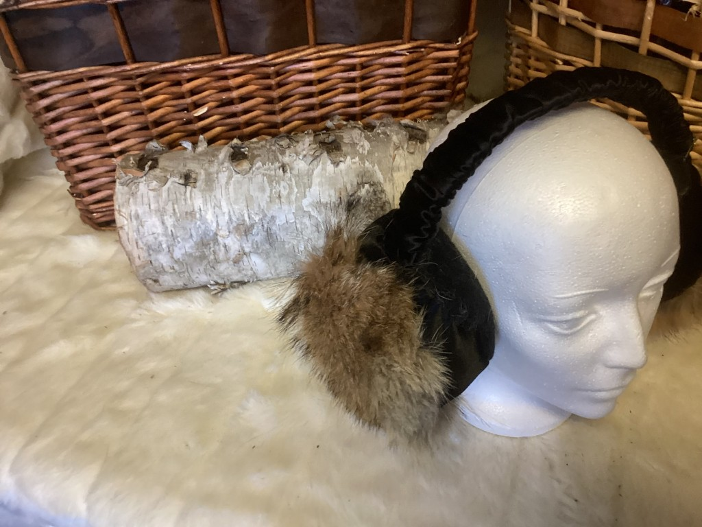
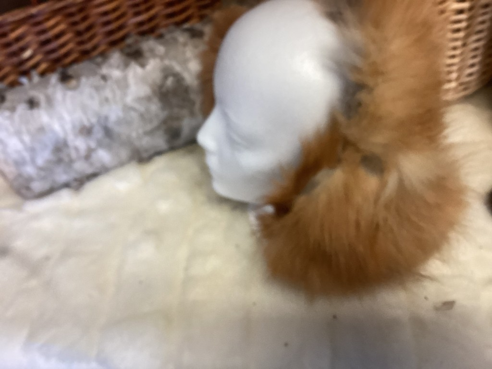
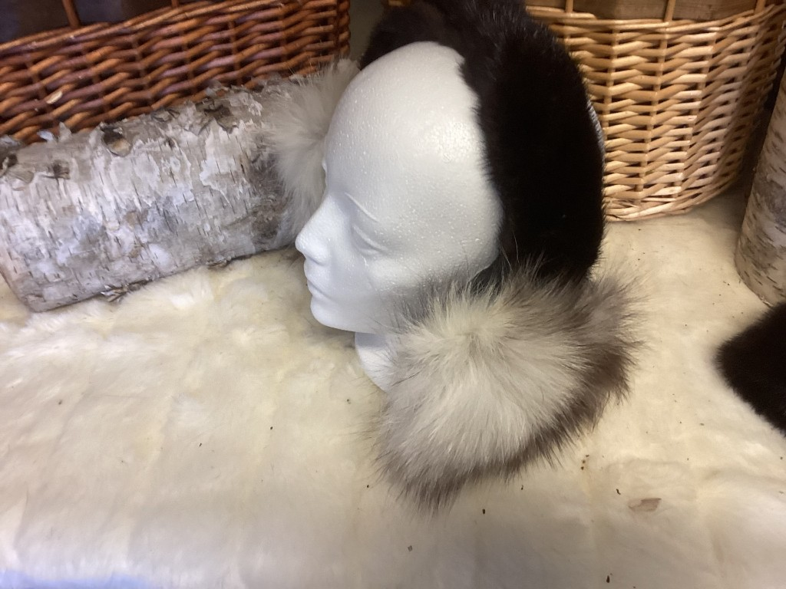
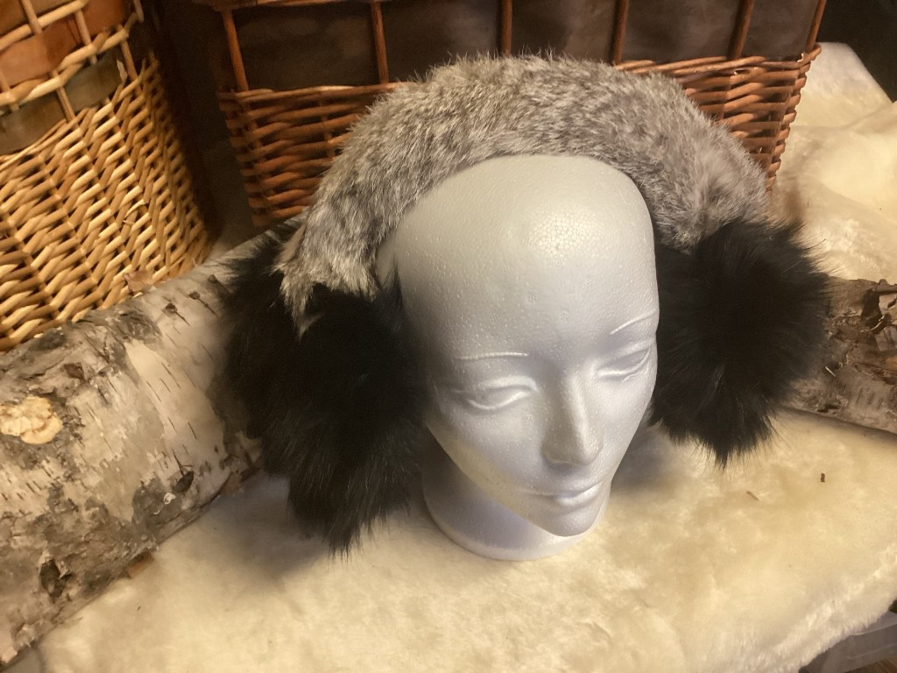

Cache-oreilles
Cache-oreilles en fourrure recyclée, créations artisanales — Les Fourrures Boréales. Créations artisanales de Lucie — Les Fourrures Boréales.
Toute la boutique · Articles en fourrure sur mesure
-

Cache-oreilles junior 8-14 ans — coyote N° 502 · Cache-oreilles -

Cache-oreilles junior 8-14 ans — renard N° 503 · Cache-oreilles -

Cache-oreilles junior 8-14 ans — renard et vison N° 500 · Cache-oreilles -

Cache-oreilles junior 8-14 ans — vison et lapin N° 501 · Cache-oreilles